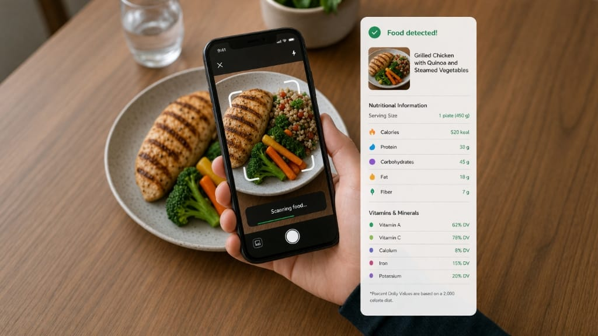

01 · Instant Detection
Scan in seconds
Point your phone camera at any plate. Our vision AI instantly isolates every item on your plate, calculates the portion size, and returns total calories, macros, and nutrients before your food gets cold.
- ✓ Real-time camera viewfinder with smart auto-framing
- ✓ Quick photo upload fallback whenever camera isn't available
- ✓ Full calories, macros & micronutrients tracked in ~3s
